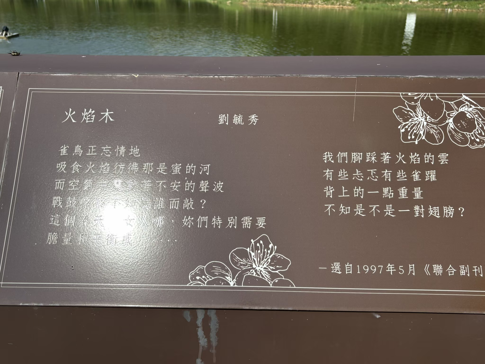
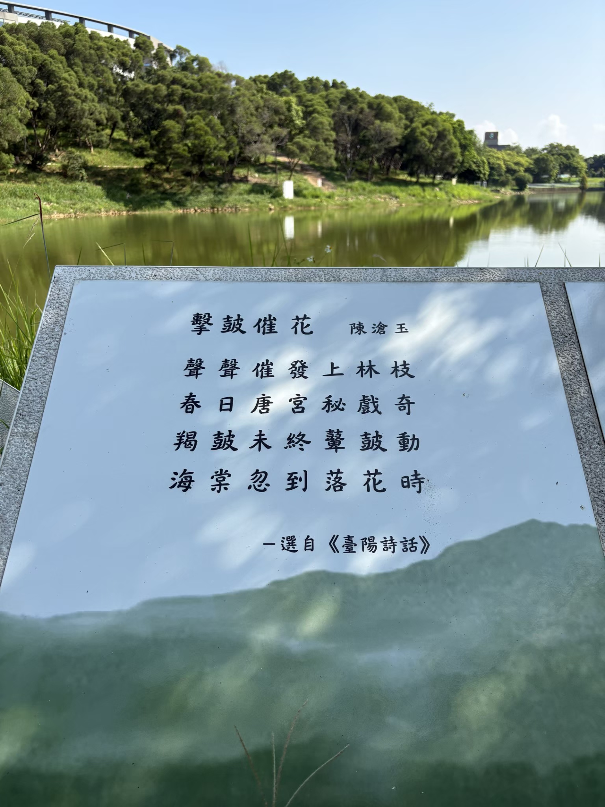
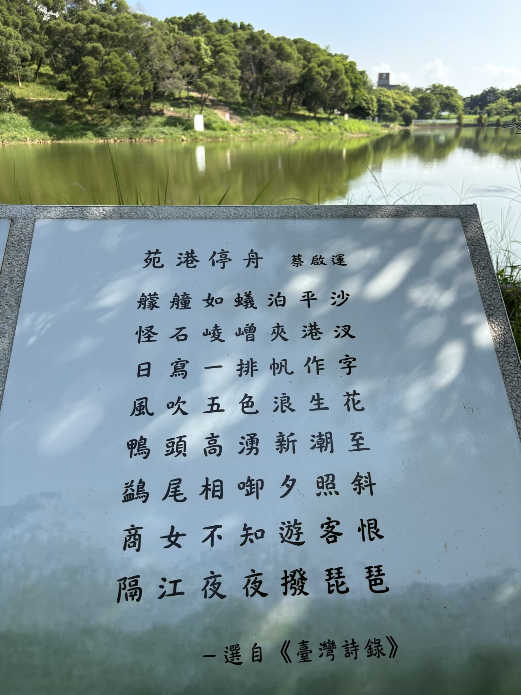
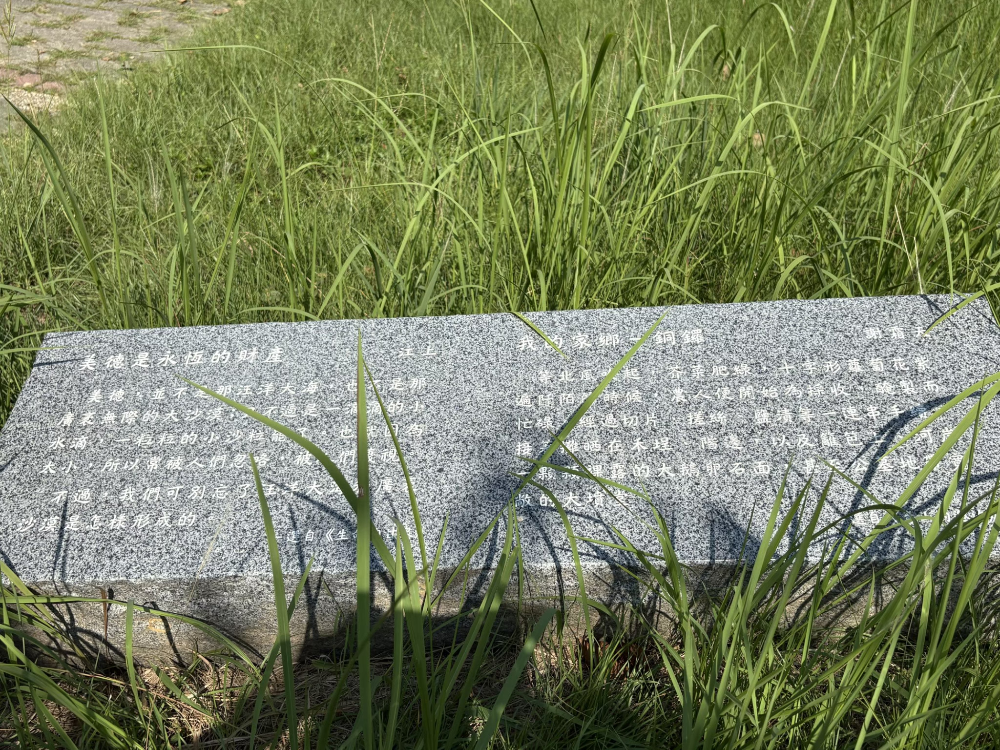

文學教育
講座、閱讀、賞析與教師研習
影像／苗栗文學步道實景照片・主視覺調色設計
一條步道，串起苗栗的人文風景
我們以研究、導覽與數位典藏，讓在地文學走出書頁，走進校園與生活。
WRITER ARCHIVE
THE BEGINNING
2012年，國立聯合大學迎接建校五十週年。為強化在地連結與人文教育，校友募款、學者與校內團隊共同規劃，在八甲校區大學湖畔建置約六百公尺的苗栗文學步道。
諮詢小組以「書寫苗栗、作品優良」為選錄原則，兼顧清代、日治與戰後，涵蓋古典詩、小說、散文、新詩、戲劇、兒童文學與報導文學。因授權與聯繫因素，現地最終呈現38位作家作品。
2012 校慶規劃啟動
38 位作家作品落地
NOW 數位資料庫延伸
WALK & READ
作品以玻璃噴砂、大理石雕刻、金屬板與水泥基座等形式，融入八甲校區的湖光與綠意。




ABOUT THE ASSOCIATION
「台灣苗栗文學步道推廣協會」正在籌備中。我們期待結合校園、社區、文化工作者與社會各界，讓苗栗文學成為可閱讀、可行走、可傳承的公共文化資產。
講座、閱讀、賞析與教師研習
培訓志工，串聯校園與社區
作家資料庫、QR Code 與語音導覽
連結作家、文化工作者與地方團隊
CHARTER DRAFT
以苗栗縣為組織區域，推廣在地文學、人文教育、步道維護、文化觀光與地方創生。
規劃個人、團體與贊助會員；會員大會為最高權力機構，設理事9人、監事3人。
步道規劃、教育推廣、導覽與志工發展、數位與出版，依業務需要推進工作。
經費來自會費、捐款、補助與活動；解散後剩餘財產不得分配會員，歸屬公益用途。
本摘要依使用者提供的26條章程草案整理；正式版本須經會員大會通過並報主管機關核備。
SOURCE POLICY
本資料庫不是完整定本，而是可持續校訂的第一版。內容優先採用文化部國家文化記憶庫、國立臺灣文學館、國家圖書館、客家委員會、地方政府與學術研究資料。
本地參考文獻包括使用者提供的《客家文化事典》與苗栗文學步道相簿。姓名、年代或名錄有異說時，卡片中直接註明；尚無充分公開史料者不推測補寫。
TAKE PART
我們正在招募發起人會員、籌備委員、一般會員、志工夥伴與顧問。歡迎教師、校友、文化工作者與關心苗栗的朋友加入。
填寫「加入我們」表單 ↗表單將在新視窗開啟；協會其他聯絡方式待籌備處確認。